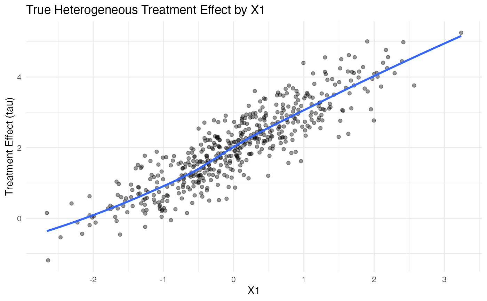

Bayesian Causal Forests (BCF) for Heterogeneous Treatment Effects
bayesian-causal-forests.Rmd🌲 Bayesian Causal Forests (BCF)
Bayesian Causal Forests (BCF) are a nonparametric Bayesian approach to estimating individual-level heterogeneous treatment effects by modeling both the outcome and treatment assignment using tree-based ensembles.
1. 🧪 Simulate Data with Heterogeneous Effects
set.seed(123)
n <- 500
X1 <- rnorm(n)
X2 <- rnorm(n)
X3 <- rbinom(n, 1, 0.5)
tau <- 2 + X1 - 0.5 * X2 # treatment effect varies by covariates
W <- rbinom(n, 1, prob = plogis(0.4 * X1 - 0.3 * X2 + 0.5 * X3))
Y <- tau * W + 1.5 * X1 + 0.8 * X2 + 1.0 * X3 + rnorm(n)
df <- data.frame(X1, X2, X3, W, Y)2. 📈 Visualize True Heterogeneous Effect
ggplot(data.frame(X1, tau), aes(x = X1, y = tau)) +
geom_point(alpha = 0.4) +
geom_smooth(se = FALSE) +
labs(title = "True Heterogeneous Treatment Effect by X1",
x = "X1", y = "Treatment Effect (tau)") +
theme_minimal()
3. 📦 Fit a BCF Model
If using the bcf package:
X <- as.matrix(df[, c("X1", "X2", "X3")])
bcf_fit <- bcf(y = df$Y, z = df$W, x_control = X, x_moderate = X)
tau_hat <- colMeans(bcf_fit$tau)4. 🧪 Compare Estimated vs. True Effects
ggplot(data.frame(True = tau, Estimated = tau_hat), aes(x = True, y = Estimated)) +
geom_point(alpha = 0.4) +
geom_abline(slope = 1, intercept = 0, linetype = "dashed", color = "red") +
labs(title = "True vs. Estimated Treatment Effects",
x = "True Effect", y = "Estimated Effect") +
theme_minimal()